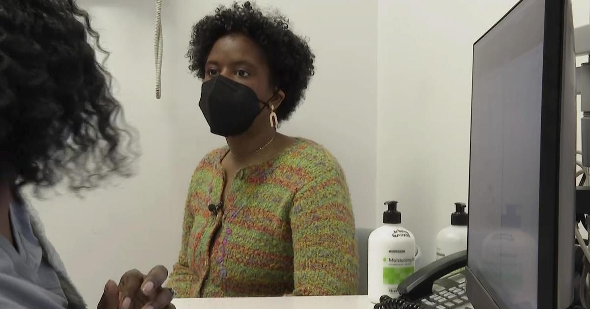

How a biased test kept thousands of Black patients from getting a new kidneyJazmin Evans had been waiting for a new kidney for four years when her hospital revealed shocking news: She should have been put on the in 2015 instead of 2019 — and a racially biased organ test was to blame. As upsetting as that notification was, it also was part of an unprecedented move to mitigate the racial inequity. Evans is among more than 14,000 Black kidney transplant candidates so far given credit for lost waiting time, moving them up the priority list for their transplant. "I remember just reading that letter over and over again," said Evans, 29, of Philadelphia, who shared the notice in a TikTok video to educate other patients. "How could this happen?" At issue is a once widely used test that overestimated how well Black people's kidneys were functioning, making them look healthier than they really were — all because of an automated formula that calculated results for Black and non-Black patients differently. That race-based equation could delay diagnosis of organ failure and evaluation for a transplant, exacerbating other disparities that already make Black patients more at risk of needing a new kidney but less likely to get one. A few years ago, the National Kidney Foundation and American Society of Nephrology prodded laboratories to switch to race-free equations in calculating kidney function. Then the U.S. organ transplant network ordered hospitals to use only race-neutral test results in adding new patients to the kidney waiting list. "The immediate question came up: What about the people right now? You can't just leave them behind," said Dr. Martha Pavlakis of Boston's Beth Israel Deaconess Medical Center and former chair of the network's kidney committee. Pavlakis calls what happened next an attempt at restorative justice: The transplant network gave hospitals a year to uncover which Black kidney candidates could have qualified for a new kidney sooner if not for the race-based test — and adjust their waiting time to make up for it. That lookback continues for each newly listed Black patient to see if they, too, should have been referred sooner. Between January 2023 and mid-March, more than 14,300 Black kidney transplant candidates have had their wait times modified, by an average of two years, according to the United Network for Organ Sharing, which runs the transplant system. So far more than 2,800 of them, including Evans, have received a transplant. But it's just one example of a larger problem permeating health care. Numerous formulas or "algorithms" used in medical decisions — treatment guidelines, diagnostic tests, risk calculators — adjust the answers according to race or ethnicity in a way that puts people of color at disadvantage. Given how embedded these equations are in medical software and electronic records, even doctors may not realize how widely they impact care decisions. "Health equity scholars have been raising alarm bells about the way race has been misused in clinical algorithms for decades," said Dr. Michelle Morse, New York City's chief medical officer. Change is beginning, slowly. No longer are obstetricians supposed to include race in determining the risk of a pregnant woman attempting vaginal birth after a prior C-section. The American Heart Association just removed race from a commonly used calculator of people's heart disease risk. The American Thoracic Society has urged replacing race-based lung function evaluation. The kidney saga is unique because of the effort to remedy a past wrong. "Lots of time when we see health inequities, we just assume there's nothing we can do about it," Morse said. "We can make changes to restore faith in the health system and to actually address the unfair and avoidable outcomes that Black people and other people of color face." Black Americans are over three times more likely than white people to experience kidney failure. Of the roughly 89,000 people currently on the waiting list for a new kidney, about 30% are Black. Race isn't a biological factor like age, sex or weight — it's a social construct. So how did it make its way into calculations of kidney function? The eGFR, or estimated glomerular filtration rate, evaluates kidney health based on how quickly a waste compound called creatinine gets filtered from blood. Because of a long-ago false theory about differences in creatinine levels, many lab reports until recently often would list two results - one calculated for non-Black patients and another for Black patients that could overestimate kidney function by as much as 16%. Not every Black kidney candidate was affected. Some may have had kidney failure diagnosed without that test. For others to have a chance at benefitting from UNOS' mandated lookback, transplant center staff-turned-detectives often worked after hours and weekends, hunting years-old records for a test that, recalculated without the race adjustment, might make the difference. "You're reaching out to the nephrologist, their primary care doctors, the dialysis units to get those records," said Dr. Pooja Singh of Jefferson Health's transplant institute in Philadelphia, where Evans received her new kidney. "That first patient getting transplanted for us was such a great moment for our program that the work didn't feel like work after that." A high school sports physical first spotted Evans' kidney disease at age 17. While finishing her master's degree and beginning to earn her Ph.D. at Temple University, she started dialysis — for nine hours a night while she slept — and was placed on the transplant list. How long it takes to get a kidney transplant depends on patients' blood type, medical urgency and a mix of other factors — including how long they've spent on the waiting list. Evans was first listed in April 2019. When the Jefferson transplant center unearthed her old lab tests, they found she should have qualified in September 2015. "Just for context, when I was still an undergrad I should have been on the list," she said, recalling the anger she felt as she read the letter. What she called "a mind-blowing" credit of 3½ more years waiting also provided "a glimmer of hope" that she'd be offered a matching kidney soon. Evans got a new kidney on July 4 and is healthy again, and grateful the policy change came in time for her. "You don't know if people would be alive today" if it had been enacted earlier, she said. Still, that extra step of "making amends to fix the situation for those that we can — I feel like it's very important and it's very necessary if you're truly wanting to bring more equity and equality into the medical field." |
 |